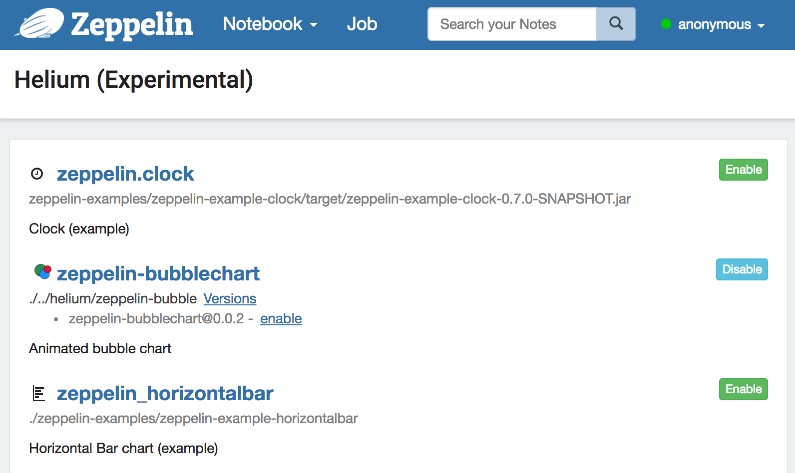
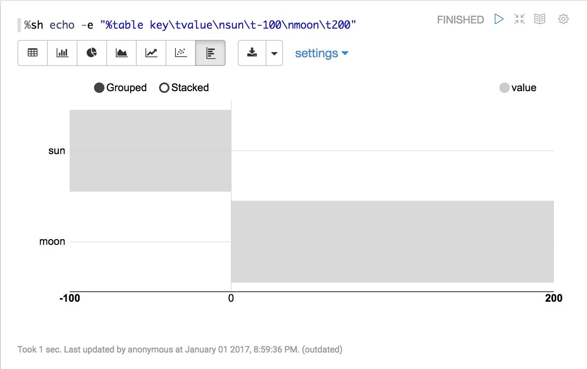

Writing a new Visualization (Experimental)
What is Apache Zeppelin Visualization
Apache Zeppelin Visualization is a pluggable package that can be loaded/unloaded on runtime through Helium framework in Zeppelin. A Visualization is a javascript npm package and user can use them just like any other built-in visualization in notebook.
How it works
1. Load Helium package files from registry
Zeppelin needs to know what Visualization packages are available. Zeppelin searches Helium package file from local registry (by default helium/ directory) by default. Helium package file provides informations like name, artifact, and so on. It's similar to package.json in npm package.
Here's an example helium/zeppelin-example-horizontalbar.json
{
"type" : "VISUALIZATION",
"name" : "zeppelin_horizontalbar",
"description" : "Horizontal Bar chart (example)",
"artifact" : "./zeppelin-examples/zeppelin-example-horizontalbar",
"license" : "Apache-2.0",
"icon" : "<i class='fa fa-bar-chart rotate90flipX'></i>"
}
Check Create helium package file section to learn about it.
2. Enable packages
Once Zeppelin loads Helium package files from local registry, available packages are displayed in Helium menu.
Click 'enable' button.

3. Create and load visualization bundle on the fly
Once a Visualization package is enabled, HeliumVisualizationFactory creates a js bundle. The js bundle is served by helium/visualization/load rest api endpoint.
4. Run visualization
Zeppelin shows additional button for loaded Visualizations. User can use just like any other built-in visualizations.

Write new Visualization
1. Create a npm package
Create a package.json in your new Visualization directory. Normally, you can add any dependencies in package.json however Zeppelin Visualization package only allows two dependencies: zeppelin-vis and zeppelin-tabledata.
Here's an example
{
"name": "zeppelin_horizontalbar",
"description" : "Horizontal Bar chart",
"version": "1.0.0",
"main": "horizontalbar",
"author": "",
"license": "Apache-2.0",
"dependencies": {
"zeppelin-tabledata": "*",
"zeppelin-vis": "*"
}
}
2. Create your own visualization
To create your own visualization, you need to create a js file and import Visualization class from zeppelin-vis package and extend the class. zeppelin-tabledata package provides some useful transformations, like pivot, you can use in your visualization. (you can create your own transformation, too).
Visualization class, there're several methods that you need to override and implement. Here's simple visualization that just prints Hello world.
import Visualization from 'zeppelin-vis'
import PassthroughTransformation from 'zeppelin-tabledata/passthrough'
export default class helloworld extends Visualization {
constructor(targetEl, config) {
super(targetEl, config)
this.passthrough = new PassthroughTransformation(config);
}
render(tableData) {
this.targetEl.html('Hello world!')
}
getTransformation() {
return this.passthrough
}
}
To learn more about Visualization class, check visualization.js.
You can check complete visualization package example here.
Zeppelin's built-in visualization uses the same API, so you can check built-in visualizations as additional examples.
3. Create Helium package file
Helium Package file is a json file that provides information about the application. Json file contains the following information
{
"type" : "VISUALIZATION",
"name" : "zeppelin_horizontalbar",
"description" : "Horizontal Bar chart (example)",
"license" : "Apache-2.0",
"artifact" : "./zeppelin-examples/zeppelin-example-horizontalbar",
"icon" : "<i class='fa fa-bar-chart rotate90flipX'></i>"
}
type
When you're creating a visualization, 'type' should be 'VISUALIZATION'. Check application type if you're interested in the other types of package.
name
Name of visualization. Should be unique. Allows [A-Za-z90-9_].
description
A short description about visualization.
artifact
Location of the visualization npm package. Support npm package with version or local filesystem path.
e.g.
When artifact exists in npm repository
artifact: "my-visualiztion@1.0.0"
When artifact exists in local file system
artifact: "/path/to/my/visualization"
license
License information.
e.g.
license: "Apache-2.0"
icon
Icon to be used in visualization select button. String in this field will be rendered as a HTML tag.
e.g.
icon: "<i class='fa fa-coffee'></i>"
4. Run in dev mode
Place your Helium package file in local registry (ZEPPELIN_HOME/helium). Run Zeppelin. And then run zeppelin-web in visualization dev mode.
cd zeppelin-web
yarn run visdev
You can browse localhost:9000. Everytime refresh your browser, Zeppelin will rebuild your visualization and reload changes.